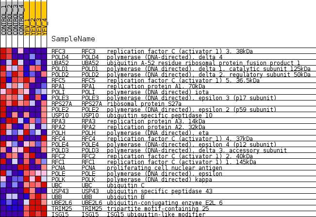
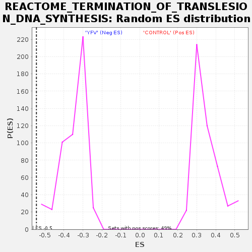

Profile of the Running ES Score & Positions of GeneSet Members on the Rank Ordered List
| Dataset | MATRIZ_GSE99081_collapsed_to_symbols.gsea_CLASE_99081.cls#CONTROL_versus_YFV |
| Phenotype | gsea_CLASE_99081.cls#CONTROL_versus_YFV |
| Upregulated in class | YFV |
| GeneSet | REACTOME_TERMINATION_OF_TRANSLESION_DNA_SYNTHESIS |
| Enrichment Score (ES) | -0.5449937 |
| Normalized Enrichment Score (NES) | -1.5644236 |
| Nominal p-value | 0.0 |
| FDR q-value | 0.088344455 |
| FWER p-Value | 0.977 |
| SYMBOL | TITLE | RANK IN GENE LIST | RANK METRIC SCORE | RUNNING ES | CORE ENRICHMENT | |
|---|---|---|---|---|---|---|
| 1 | RFC3 | replication factor C (activator 1) 3, 38kDa | 159 | 1.141 | 0.0556 | No |
| 2 | POLD4 | polymerase (DNA-directed), delta 4 | 792 | 0.705 | 0.0570 | No |
| 3 | UBA52 | ubiquitin A-52 residue ribosomal protein fusion product 1 | 1969 | 0.488 | 0.0125 | No |
| 4 | POLD1 | polymerase (DNA directed), delta 1, catalytic subunit 125kDa | 2371 | 0.430 | 0.0124 | No |
| 5 | POLD2 | polymerase (DNA directed), delta 2, regulatory subunit 50kDa | 2446 | 0.420 | 0.0319 | No |
| 6 | RFC5 | replication factor C (activator 1) 5, 36.5kDa | 2905 | 0.352 | 0.0238 | No |
| 7 | RPA1 | replication protein A1, 70kDa | 3464 | 0.292 | 0.0062 | No |
| 8 | POLI | polymerase (DNA directed) iota | 3723 | 0.264 | 0.0054 | No |
| 9 | POLE3 | polymerase (DNA directed), epsilon 3 (p17 subunit) | 3752 | 0.262 | 0.0187 | No |
| 10 | RPS27A | ribosomal protein S27a | 4134 | 0.232 | 0.0084 | No |
| 11 | POLE2 | polymerase (DNA directed), epsilon 2 (p59 subunit) | 4611 | 0.190 | -0.0100 | No |
| 12 | USP10 | ubiquitin specific peptidase 10 | 5020 | 0.157 | -0.0262 | No |
| 13 | RPA3 | replication protein A3, 14kDa | 5730 | 0.095 | -0.0644 | No |
| 14 | RPA2 | replication protein A2, 32kDa | 6313 | 0.052 | -0.0974 | No |
| 15 | POLH | polymerase (DNA directed), eta | 6418 | 0.044 | -0.1013 | No |
| 16 | RFC4 | replication factor C (activator 1) 4, 37kDa | 6627 | 0.031 | -0.1123 | No |
| 17 | POLE4 | polymerase (DNA-directed), epsilon 4 (p12 subunit) | 10546 | -0.063 | -0.3504 | No |
| 18 | POLD3 | polymerase (DNA-directed), delta 3, accessory subunit | 10674 | -0.073 | -0.3540 | No |
| 19 | RFC2 | replication factor C (activator 1) 2, 40kDa | 10916 | -0.095 | -0.3634 | No |
| 20 | RFC1 | replication factor C (activator 1) 1, 145kDa | 11120 | -0.112 | -0.3695 | No |
| 21 | PCNA | proliferating cell nuclear antigen | 11249 | -0.124 | -0.3703 | No |
| 22 | POLE | polymerase (DNA directed), epsilon | 13253 | -0.334 | -0.4747 | No |
| 23 | POLK | polymerase (DNA directed) kappa | 14073 | -0.455 | -0.4992 | No |
| 24 | UBC | ubiquitin C | 14182 | -0.479 | -0.4784 | No |
| 25 | USP43 | ubiquitin specific peptidase 43 | 15263 | -0.717 | -0.5039 | Yes |
| 26 | UBB | ubiquitin B | 15642 | -0.918 | -0.4746 | Yes |
| 27 | UBE2L6 | ubiquitin-conjugating enzyme E2L 6 | 16021 | -1.679 | -0.4017 | Yes |
| 28 | TRIM25 | tripartite motif-containing 25 | 16114 | -2.360 | -0.2721 | Yes |
| 29 | ISG15 | ISG15 ubiquitin-like modifier | 16236 | -4.880 | 0.0002 | Yes |

